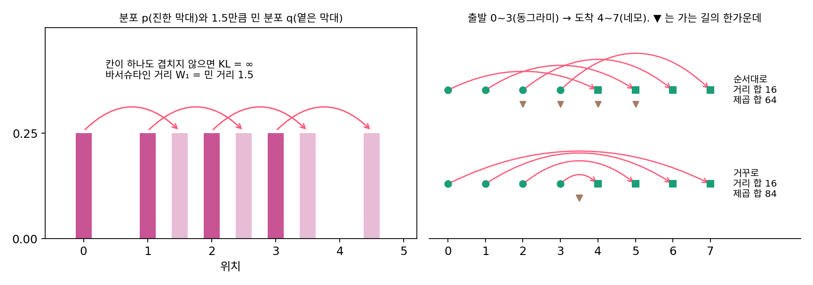
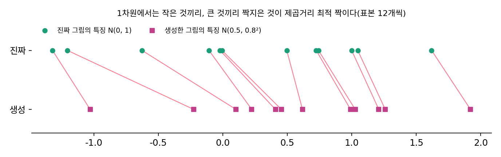
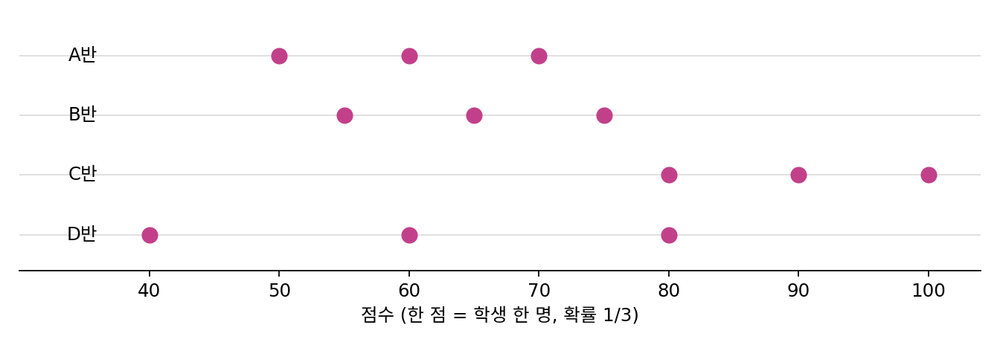
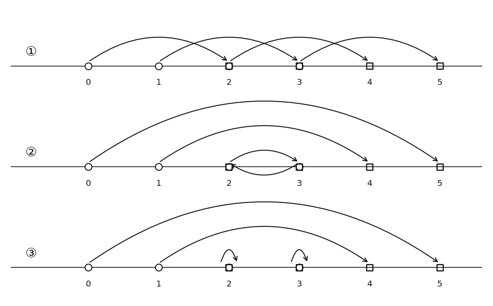
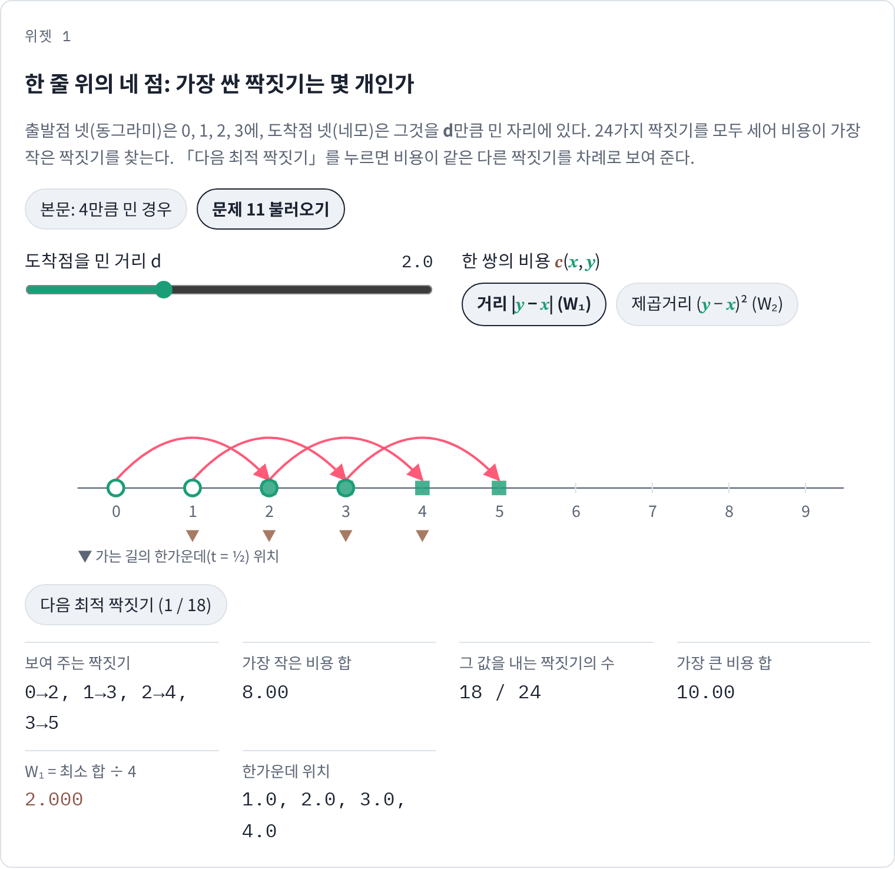
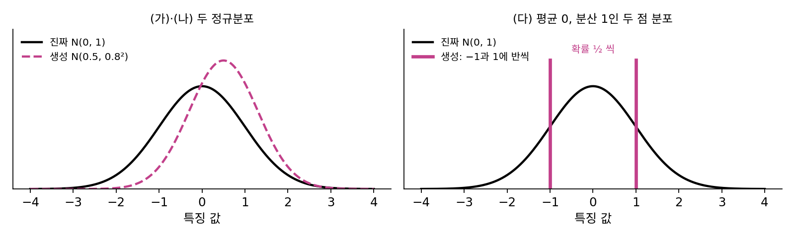

바서슈타인 거리: 옮기는 최소 비용을 거리로
생성 모델이 내놓은 분포가 진짜 데이터 분포와 얼마나 다른지 숫자 하나로 재고 싶다고 하자. 분류 모델을 학습시키며 익숙해진 크로스 엔트로피 뒤에는, 같은 자리에 두 분포가 매긴 확률의 비율을 보는 KL 발산이 있다. 그런데 생성한 그림의 분포가 진짜 분포에서 살짝 비켜나 두 분포가 겹치는 칸이 하나도 없으면 어떻게 될까? 조금 비켜난 것과 멀리 비켜난 것을 가려 주는 잣대가 있을까?
역사: 칸토로비치의 거리에 붙은 다른 사람의 이름
칸토로비치는 1939년 소책자와 1942년 논문에서 이미 최소 운반 비용으로 두 분포 사이의 거리를 쟀다. 지금 이 거리에 붙은 이름은 다른 사람의 것이다. 러시아 수학자 레오니트 바세르시테인(Leonid Vaseršteĭn)이 1969년 마르코프 과정에 관한 논문에서 이 거리를 썼고, 이듬해인 1970년 롤란트 도브루신(Roland Dobrushin)이 그 논문에서 이 거리를 보고 「바서슈타인 거리」라는 이름을 붙였다. Wasserstein은 Vaserstein이라는 이름의 독일식 철자다. 칸토로비치가 먼저 이 거리를 썼기 때문에 「칸토로비치 거리」라고 부르자는 사람도 있다.
겹치지 않는 두 분포
가장 단순한 경우부터 보자. 분포 p는 위치 0, 1, 2, 3에 1/4씩 확률을 두고, 분포 q는 같은 모양을 오른쪽으로 s만큼 민 것이다. 두 분포가 얼마나 다른지에 대한 정답이 누가 봐도 s이기 때문에 이 예를 골랐다. 두 잣대로 재어 보자.
| 민 거리 s | 0.5 | 1 | 1.5 | 2 | 5 |
|---|---|---|---|---|---|
| KL(p‖q) | ∞ | ∞ | ∞ | ∞ | ∞ |
| 옮기는 최소 비용 (한 단위당 거리) | 0.5 | 1 | 1.5 | 2 | 5 |
KL 발산은 p가 확률을 둔 자리에서 q의 확률이 0이면 무한대가 되어서, s = 1처럼 세 자리가 겹쳐도 위치 0에서 q가 0인 이상 역시 무한대다. 0.5만큼 비켜났든 5만큼 비켜났든 KL은 같은 값 ∞를 내놓으니, 학습이 「조금 더 가까워지는 쪽」을 찾을 단서가 없다. 반면 확률을 흙으로 보고 칸토로비치 문제를 풀어 옮기는 최소 비용을 재면, 비용이 정확히 s로 나온다. 흙 1/4씩을 s만큼씩 옮기면 되기 때문이다.
이렇게 두 분포 사이에서 칸토로비치 문제를 풀어 얻은 최소 비용을 바서슈타인 거리 (흙을 옮기는 최소 비용으로 잰 거리 / Wasserstein distance)라 한다. 한 쌍을 옮기는 비용을 거리 |y − x|로 잡으면 W₁, 거리의 제곱으로 잡고 마지막에 제곱근을 씌우면 W₂다. 확률을 흙으로 보므로 수송 계획 π의 칸들은 모두 더해 1이다.
W₁과 W₂는 「거리」라는 이름에 걸맞은 성질을 지킨다. 같은 분포 사이에서만 0이고, 순서를 바꿔도 값이 같고(흙을 거꾸로 날라도 비용이 같다), 다른 분포를 거쳐 가면 짧아지지 않는다(삼각부등식). KL 발산은 둘째와 셋째를 지키지 않는다. 같은 네 칸 위의 p = (0.4, 0.3, 0.2, 0.1)과 고른 분포 r = (0.25, 0.25, 0.25, 0.25)를 보면 KL(p‖r) = 0.1064, KL(r‖p) = 0.1218로 방향에 따라 다르지만, W₁은 어느 쪽으로 재든 0.5다. 삼각부등식도 숫자로 확인할 수 있다. p에서 그 거울상 q = (0.1, 0.2, 0.3, 0.4)까지의 W₁은 1.0이고, 모든 확률을 위치 3에 모은 분포를 거쳐 가면 2.0 + 1.0 = 3.0이다.
거리로 잴까, 거리의 제곱으로 잴까
W₁과 W₂는 무엇이 다를까? 출발점 넷 0, 1, 2, 3을 도착점 넷 4, 5, 6, 7로 옮기는 짝짓기 24가지를 모두 세어 보면 차이가 드러난다. 모든 도착점이 모든 출발점보다 오른쪽에 있으므로, 어떻게 짝지어도 거리의 합은 (4 + 5 + 6 + 7) − (0 + 1 + 2 + 3) = 16이다. 24가지가 모두 거리 합 16으로 똑같이 최적이라, 거리로 재는 W₁은 최적 짝짓기를 하나로 정해 주지 못한다. 거리의 제곱으로 재면 순서대로 짝지은 것(0→4, 1→5, 2→6, 3→7)만 64로 가장 작고, 거꾸로 짝지은 것(0→7, 1→6, 2→5, 3→4)은 84로 가장 크다. 둘 다 W 값으로 바꾸면 W₁ = 16/4 = 4, W₂ = √(64/4) = 4로 같지만, 최적 짝짓기가 몇 개인지는 크게 다르다.

차이는 가는 길의 한가운데에서도 보인다. 순서대로 짝지으면 길의 한가운데 위치가 2, 3, 4, 5로 고르게 퍼지지만, 거꾸로 짝지으면 네 점이 모두 3.5에서 만난다. 플로우 매칭처럼 짝지은 두 점을 잇는 직선 위에서 속도를 배워야 하는 일에서는 한 점에서 여럿이 만나는 짝짓기가 곤란하다. 제곱은 한 점을 멀리 보내는 것을 무겁게 벌주어 다들 비슷한 거리를 가는 엇갈리지 않는 짝짓기만 남기기 때문에, 최적 수송으로 쌍을 짓는 플로우 매칭은 보통 제곱거리 비용을 쓴다.
ML에서: 생성한 그림을 재는 FID
생성 모델의 그림이 얼마나 진짜 같은지 잴 때 가장 널리 쓰는 점수가 FID(프레셰 인셉션 거리)다. 2017년 마르틴 호이젤(Martin Heusel)과 동료들은 이미지 분류 신경망 Inception-v3의 마지막 풀링 층에서 뽑은 특징을 진짜 그림 묶음과 생성한 그림 묶음(논문에서는 5만 장)에 대해 따로 모으고, 각 묶음을 평균과 공분산이 같은 정규분포로 근사한 뒤, 두 정규분포 사이의 거리를 쟀다. 논문은 이 거리를 「프레셰 거리, 바서슈타인-2 거리라고도 하는」 것이라 적었다. 두 정규분포 사이의 W₂를 제곱한 값이 FID다. 1차원에서는 W₂를 재는 일이 특히 쉬워서, 두 샘플을 각각 작은 것부터 늘어놓고 같은 순위끼리 짝지으면 그것이 제곱거리 최적 짝짓기다.

문제 10. 세 반의 시험 점수
세 반의 점수 분포가 있다. A반은 50, 60, 70점에 한 명씩, B반은 55, 65, 75점에 한 명씩, C반은 80, 90, 100점에 한 명씩이다. 확률은 사람 수에 비례한다. (가) A반과 B반, A반과 C반 사이의 KL 발산은? (나) 두 쌍의 W₁은? (다) 40, 60, 80점에 한 명씩인 D반과 A반의 W₁, W₂를 A반과 B반의 값과 비교하라.


(가)는 점수가 하나도 안 겹치니까 두 쌍 모두 KL 발산이 무한대야. (나)는 B반이 다 5점씩 높으니까 5, C반은 30이고.

KL로는 B반과 C반이 똑같이 「무한히 다르다」인데, W₁으로는 여섯 배 차이가 나네.

좋아요. 그럼 D반은 A반과 얼마나 다를까요? 평균은 셋 다 60점인데요.
40점과 80점에 있는 사람이 50점과 70점에서 각각 10점씩 옮겨야 하니까 (10 + 0 + 10)/3 = 6.67이에요.
W₂는 √((100 + 0 + 100)/3) = 8.165야. B반은 W₁, W₂가 둘 다 5고. W₁으로 보면 D반(6.67)이 B반(5)보다 조금 더 다른데, W₂로 보면 차이가 더 벌어져(8.165 대 5).

왜 W₂에서 더 벌어질까요?

B반은 세 명이 모두 5점씩 옮기고, D반은 두 명이 10점씩 옮기고 한 명은 점수가 그대로예요. 옮기는 거리의 평균은 비슷한데, 제곱은 한 명이 멀리 가는 걸 더 무겁게 쳐요. W₂는 「한 사람이라도 멀리 옮기느냐」에 더 민감하네요. 표준편차가 평균 절대편차보다 튀는 값에 민감한 것과 같아요.
문제 11. 겹친 줄 위의 네 점
한 줄 위에 출발점 x = {0, 1, 2, 3}과 도착점 y = {2, 3, 4, 5}가 있어(각 1/4) 이번에는 두 줄이 겹친다. 아래 그림은 짝짓기 셋을 화살표로 그린 것이다. (가) ① 순서대로 짝짓기(0→2, 1→3, 2→4, 3→5)와 ② 거꾸로 짝짓기(0→5, 1→4, 2→3, 3→2)의 비용 합을 거리와 제곱거리로 각각 구하라. 24가지 짝짓기 가운데 거리 합이 가장 작은 짝짓기는 몇 개인가? (나) ③ 짝짓기(0→5, 1→4, 2→2, 3→3)는 거리 합이 ①과 같은데, ①과 ③에서 가는 길의 한가운데 위치를 비교하라. 거리 합이 같으면 길도 똑같이 엇갈리지 않는가? (풀어 본 뒤 위젯 1의 「문제 11 불러오기」로 확인해 보자.)

거리 비용 표를 만들어 ①과 ②를 계산했어요. ①은 거리 합 8, ②는 5 + 3 + 1 + 1 = 10이에요. 도착점을 4만큼 민 경우에는 둘 다 16으로 같았는데 이번엔 달라요. 이번엔 거리로도 최적 짝짓기가 하나로 정해지네요. ①만 최적이에요.
24가지를 다 돌려 봐요.

…거리 합 8인 짝짓기가 18개예요. 하나가 아니네요.
4만큼 민 경우에 모든 짝짓기의 거리 합이 왜 같았죠?
모든 도착점이 모든 출발점보다 오른쪽이라 |y − x| = y − x이고, 더하면 Σy − Σx로 짝짓기와 상관없었어요. 이번엔 3→2처럼 왼쪽으로 가는 화살표가 생길 수 있어요.
그런 화살표가 없으면 거리 합은요?
늘 14 − 6 = 8이에요. 그럼 18개는… 왼쪽으로 가는 건 3→2 하나뿐이니까, 출발점 3을 2가 아닌 세 곳 가운데 하나로 보내면 나머지 셋은 아무렇게나 짝지어도 되니까 3 × 6 = 18개예요.
그럼 제곱거리로 재면요?

①은 2² × 4 = 16, ②는 25 + 9 + 1 + 1 = 36이에요. 제곱거리로는 16인 짝짓기가 ① 하나뿐이고요. 제가 처음에 만든 거리 비용 표는 W₁ 쪽이었고, 플로우 매칭이 보통 쓰는 건 제곱 쪽이었네요.
(나)는 쉬워. ③도 거리 합이 8로 최소니까 ①만큼 좋은 짝짓기지. 비용이 최소인 짝짓기면 길도 덜 엇갈렸을 거야.
한가운데 위치를 직접 써 봐요.

①은 1, 2, 3, 4예요. ③은 2.5, 2.5, 2, 3이에요. 어, 0→5와 1→4 두 점이 2.5에서 만나요.
그럼 엇갈린 거잖아. 비용은 최소인데?
그러네. 0→5는 그 전에, 시간의 40%쯤 지났을 때 위치 2에 있는 점도 지나가고. 제곱으로 재 보면… ③은 25 + 9 + 0 + 0 = 34로 ①의 16보다 훨씬 커.
그럼 거리 합과 제곱 합은 무엇을 다르게 보는 걸까요?
거리 합은 나르는 거리만 같으면 누가 멀리 가고 누가 제자리에 있든 상관하지 않아요. 제곱은 한 점이 멀리 가는 걸 무겁게 벌주니까 다들 비슷한 거리를 가는 순서대로 짝짓기만 남기고요.

두 점이 만난 그 2.5에서, 짝지은 직선 위의 속도를 배우는 신경망은 무슨 속도를 배워야 할까요?
속도가 +5, +3인 점이 같이 있으니까 평균 +4요.
그럼 그 점에서 떠나는 두 점은 어떻게 돼?
둘 다 +4로 떠나니까 다시 갈라놓을 방법이 없지. 그래서 실제로 배운 흐름은 ③을 흉내 낼 수 없고, 길이 휘어야 해.
위젯 1에서 문제 11 설정을 불러와 거리와 제곱거리를 바꿔 가며, 가장 작은 비용 합을 내는 짝짓기가 몇 개인지 확인해 보세요.

문제 12. FID 를 1차원에서 손으로
진짜 그림의 특징이 N(0, 1)을, 생성한 그림의 특징이 N(0.5, 0.8²)을 따른다고 하자(특징은 1차원). 1차원 정규분포 둘 사이의 W₂² 는 (평균의 차)² + (표준편차의 차)²다. (가) 두 분포 사이의 W₂²는? (나) 두 분포에서 샘플을 n개씩 뽑아 정렬해 짝지은 제곱거리의 평균은 n = 10, 100, 1000, 10000일 때 0.3224, 0.2457, 0.2808, 0.2901이었다(씨앗 고정). 무엇이 보이는가? (다) 진짜 특징이 N(0, 1)이고 생성한 특징이 −1과 1에 반씩 몰려 있으면(평균 0, 분산 1), FID 식은 얼마를 내놓는가?

(가)는 0.5² + 0.2² = 0.25 + 0.04 = 0.29예요. (나)는 샘플이 많을수록 0.29에 다가가요. 10개일 때는 0.32로 좀 크고요. 샘플을 정렬해서 짝지은 건 1차원 제곱거리 최적 짝짓기가 작은 것끼리 큰 것끼리이기 때문이고요.
같은 N(0, 1)에서 두 번 뽑아 똑같이 재면 얼마가 나올까요?
같은 분포에서 뽑았으면 0이어야지. 바서슈타인 거리도 거리니까 자기 자신과는 0이잖아.
돌려 보니 n = 10에서 0.4205, 100에서 0.0455, 1000에서 0.0105야. 10개로 재면 앞의 0.29보다도 커.

분포끼리의 거리는 0인데, 샘플 10개끼리의 거리는 0이 아니네. 샘플이 적으면 샘플끼리의 우연한 차이가 거리로 잡히는 거야. 그래서 논문에서 생성한 그림을 5만 장이나 쓰는구나. 샘플 수가 다른 두 FID를 견주면 안 되겠다.
(다)를 볼까요? 평균과 분산만 맞춰 정규분포로 근사하는 단계에서 무엇이 사라지죠?
평균 0, 표준편차 1이라 공식으로는 (0 − 0)² + (1 − 1)² = 0이에요. 두 분포가 이렇게 다른데요?
1만 개씩 뽑아 돌려 볼게. 공식 값은 0.0001인데, 정렬해 짝지은 샘플 W₂²는 0.3967이야.
정규분포를 두 점짜리 분포로 바꿨는데 FID는 거의 모른다는 거네. 정규분포로 근사하는 순간 평균과 분산 말고는 다 버리는 거야.
FID가 낮다고 그림이 진짜와 똑같은 분포라고 할 수는 없겠네요. 1차 모멘트와 2차 모멘트만 같은 가짜는 못 걸러요.
기숙사 방 두 개의 온도가 평균도 오르내리는 폭도 같은데, 한 방은 그 사이를 고르게 오가고 다른 방은 에어컨과 히터를 번갈아 틀어서 양 끝에서만 머무는 거랑 같네. 평균과 표준편차만 보면 둘을 못 가려.